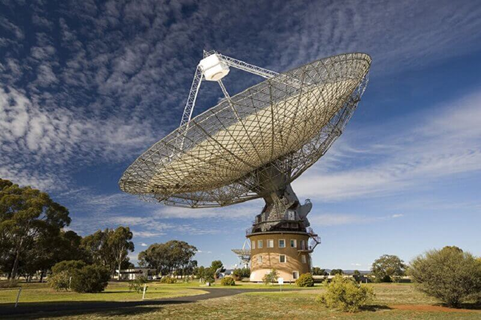

Физика
Астрофизика

Астрономията е наука, изучаваща движението, строежа и развитието на небесните тела и цялата Вселена. Предмет на изучаване са системите и явленията извън пределите на земната атмосфера като Слънцето, планетите, астероидите, кометите, метеоритите, космическото пространство, звездите, галактиките и др.
Астрономията е една от най-древните естествени науки. Доисторическите култури са оставили след себе си такива артефакти с астрономическо предназначение като Стоунхендж. А първите цивилизации на вавилонците, гърците, китайците, индийците и маите са провеждали методични наблюдения на нощното небе. След изобретяването на телескопа, развитието на астрономията се ускорява значително. Исторически астрономията е включвала астрометрия, навигация по звездите, наблюдателна астрономия, създаване на календари, и дори астрология. В наши дни професионалната астрономия често се възприема като синоним на астрофизиката.
През 20-и век астрономията е разделена на два основни клона – наблюдателна и теоретична. Наблюдателната астрономия има за цел получаването на данни за небесните тела чрез различни методи на наблюдение, които след това се анализират чрез законите на физиката. Теоретичната астрономия изучава процесите, протичащи във Вселената, които биха могли да обяснят получените от наблюдателната астрономия данни. За целта се разработват математически модели и се извършват компютърни симулации. Тези два клона се допълват взаимно: теоретичната астрономия търси обяснение на наблюдаваните явления, а наблюдателната астрономия се използва за проверка на теоретичните хипотези. Освен това астрономическите наблюдения предоставят важна информация, позволяваща проверка на фундаменталните теории във физиката – например общата теория на относителността.
Наблюдателна астрономия
 Наблюдателната астрономия има за цел получаването на данни за небесните тела чрез различни методи на наблюдение, които след това се анализират чрез законите на физиката.В наблюдателната астрономия информация за различните небесни тела и явления се получава главно след регистриране и анализ на светлина и други форми на електромагнитно излъчване. Наблюдават се и космическите лъчи, като в близко бъдеще се планира и използването на детектори на гравитационни вълни.
Според частта от електромагнитния спектър, който се използва за наблюдения, съществуват:
- Оптична астрономия. В исторически план оптичната астрономия е най-старата форма на астрономия.[3]Отначало изображенията на небесните тела се рисували на ръка. От края на 19-и и през почти целия 20-и век образите са се запазвали с фотографски методи. Съвременните изображения се снемат с цифрова фотография и най-вече със зарядно-свързани прибори CCD. За наблюденията се се използват оптични системи и компоненти (огледала, лещи), с чиято помощ се наблюдава светлината в диапазона от нискочестотни ултравиолетови до високочестотни инфрачервени лъчи. Астрономията на видимата светлина в частност използва диапазона на видимата светлина с дължина на вълната от 400 до 700 nm. Най-често използваните инструменти са телескопът и спектрографът.
- Инфрачервена астрономия: използва електромагнитни лъчения в инфрачервения диапазон. Най-често се използва телескоп, но за регистриране се използва детектор, чувствителен към инфрачервени лъчи. Инфрачервените вълни обаче се поглъщат силно от водните пари в атмосферата, което налага инфрачервените телескопи да се строят на високи и сухи места или да бъдат изведени на орбита.
- Радиоастрономията използва електромагнитни лъчения в областта на милиметровия обхват и по-нагоре.[4] Приемниците на радиотелескопите имат устройство, подобно на това на радиоапаратите, но със значително повишена чувствителност. Радиоастрономията се отличава от другите методи по това, че радиовълните се проявяват в по-голяма степен като вълни, отколкото като фотони. Затова е относително по-лесно да се измери тяхната амплитуда и фаза, което при по-къси вълни е затруднено[4]. Оптичната и радиоастрономията се извършват успешно от наземни обсерватории, защото земната атмосфера не пречи в значителна степен (с изключение на облаците, които влияят на оптичните наблюдения).
- Ултравиолетовата астрономия използва наблюдения в областта на високочестотното ултравиолетово излъчване с дължини на вълните между 100 и 3200 Å (10 до 320 nm).[4] Тъй като те се поглъщат от земната атмосфера, наблюденията се извършват от горните части на атмосферата или от орбита.
- Рентгеновата астрономия е изучаването на астрономически обекти с помощта на рентгенови лъчи. Астрономическите обекти излъчват рентгенови лъчи обикновено под формата на синхротронно лъчение, спирачно лъчение при температури на газа 107 (10 милиона) келвина и излъчване на абсолютно черно тяло при температури над 107 K.[4] Тъй като те също се поглъщат от земната атмосфера, наблюденията се извършват от горните части на атмосферата със стратосферни балони или чрез телескопи на орбита или от Космоса.
Астрономически инструменти
- Бинокъл
- Телескоп
- Компютър
- Калкулатор
- Космическа обсерватория
- Телескоп на Максутов